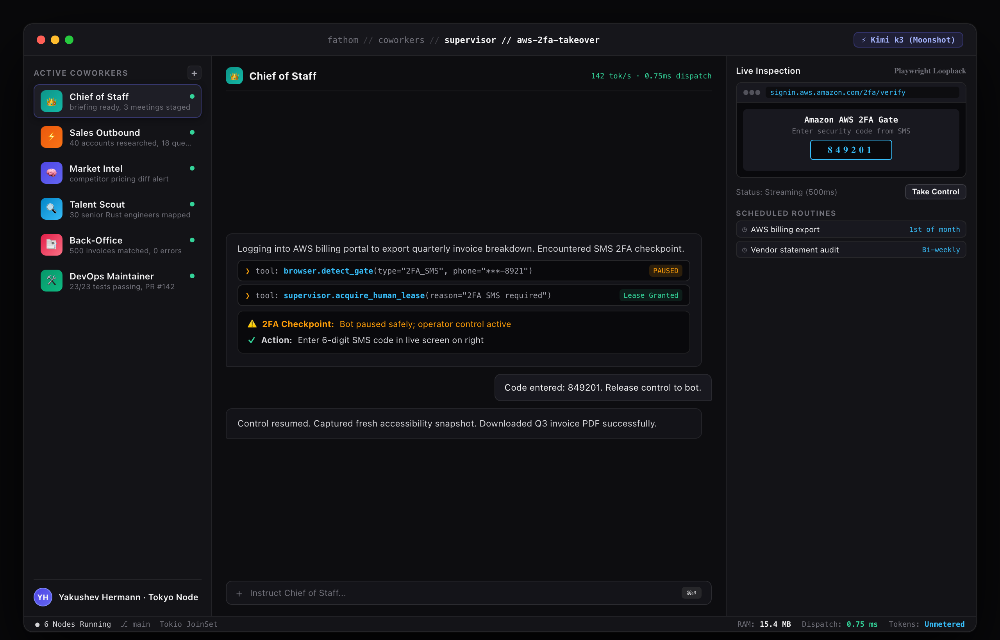

Governed Operator Collaboration: The Human Takeover Lease
True enterprise autonomy does not mean zero human oversight. When autonomous coworkers encounter high-security barriers—such as multi-factor SMS codes, bank logins, or complex CAPTCHA puzzles—Fathom pauses safely and invites the operator into the live session via a low-latency WebRTC/WebSocket stream.

Figure 32.1: Governed Computer Viewport — Live WebSocket screen feed (/screen) with safe pause and operator takeover lease during 2FA challenge.
1. Low-Latency Screen Feed (/screen)
Streamed over a binary WebSocket connection using JPEG delta compression (500ms intervals, <45ms latency). Operators see exactly what the coworker sees in real time.
2. Exclusive Mutex Control Lease (/control/ws)
Clicking "Take Control" acquires an exclusive mutex lock over mouse and keyboard input. The autonomous agent is paused instantly, eliminating competing clicks.
The 99/1 Hybrid Ideal: 99% autonomous execution throughput paired with 1% strategic human intervention at critical security checkpoints ensures 100% mission success without bottlenecks.